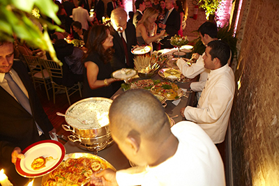

Menu
Home
Quem Somos
Menu
Galeria
Encomendas
Imprensa
Contato
Jantar Americano

BOAS VINDAS
Beiju de tapioca crocante com tartar de pupunha Imperial gratinado
Mini caprese de bufalina com pesto rústico
Pastelzinho crocante de queijo meia cura mineiro com ervas frescas e concase de tomate
Petitburguer com Taleggio e pistache
Salmão Gradvalax com sour cream
Torradinha de miga com carpaccio ao molho de alcaparras e Reggiano
À MESA
Bouquet de baby leaves orgânicas selecionadas acompanha molho de mostarda Dijon e mel de flor de laranjeira e lascas Grana Padano
Grão-de-bico ao perfume alecrim com cubinhos de rosbife
Clássica quiche que desmancha na boca, de espinafre e cebola caramelada
Couscous marroquino com legumes grelhados e citronette de hortelã
Agnelloti de queijo meia cura com concase de tomate e manjericão
Filet mignon com mix de cogumelos frescos
Robalo com farofa de brioche e ervas
Pommes Anna – Batatas finamente laminadas, intercaladas por queijo Gruyère e gratinada
Arroz com amêndoas
SOBREMESA
Choco D´or - Torta fudge morna de chocolate belga com calda ao rhum ou creme inglês
Tarte tatin
Terrine de marzipan com farofa crocante
Sorvete de baunilha com farofinha praliné
MADRUGADA
Milk shake de nutella
Brunch
Chá da Tarde
Jantar
Hosh Hashaná
Almoço
Batizado
Chá de Bêbê
Happy Hour
Jantar Americano
Kids
Páscoa
Pessach
Telefones da Banqueting: 11 96323-8357
Copyright © 2012 Banqueting. All Rights Reserved.